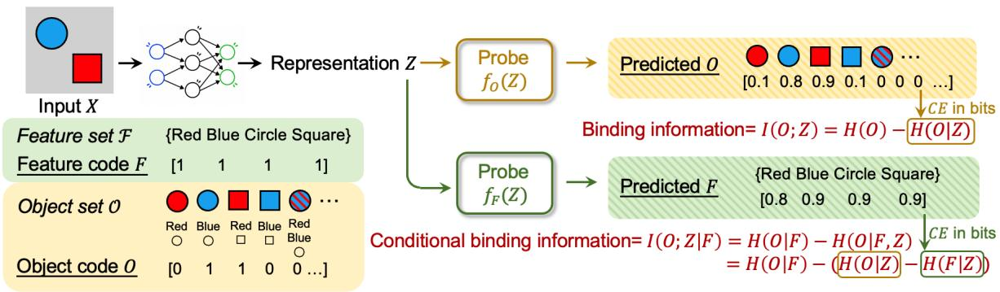
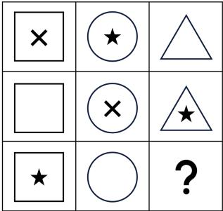

先说结论。它和通用视觉自监督的关系在于：用信息论 probing 测量 ViT 表征是否知道“哪些属性属于同一对象”，补充全局几何指标。 中高相关；详见方法、贡献和实验边界。

Figureure 2 · Binding theory and probing frameworkFigure 2. Binding theory and probing framework. We first define the space of features and objects of interest, as shown in features set F and object set O (Definitions 2.1, 2.3). Each object is a combination of features from the feature set (Definition 2.3, Remark 2.4). From there, we define the feature code F and object code O, which are random vectors that denote the presence and absence of each feature and object in a scene X. Binding information $I ( O ; Z )$ is the information of the object code in the representation Z (Definition 2.10). Conditional binding information is the information of the object code in the representation beyond what can be explained by features, hence $I ( O ; Z \mid { \breve { F } } )$ (Definition 2.13). Using information theory, the I terms can be decomposed into entropies H. $H ( O \mid Z )$ and $H ( F \mid Z )$ are the uncertainties of the object and feature codes in the representation, which can be estimated by training object code probe $f _ { O } ( Z )$ and feature code probe $f _ { F } ( Z )$ on the representation with ground truth labels of the object and feature codes (Section 2.2). The figure shows hypothetical probe-predicted logits for each element of the object and feature code. The cross-entropy losses of the object and feature probes are provable estimates of $H ( O \mid Z )$ and $H ( F \mid Z )$ (Theorem 2.20, Lemma 2.21). The remaining H(O) or $H ( O \mid F )$ terms are dataset priors which can be independently calculated from the distribution of the F and O in the dataset (Section 2.3). Combining these terms, we arrive at a probe-estimated value of binding information and conditional binding information.这张图概括 Formalizing the Binding Problem 的整体方法流程。阅读时先看模块之间传递的训练信号，再看作者如何把目标拆成可优化的子问题。

Figureure 1 · Binding failuresFigure 1. Binding failures. Left: (Campbell et al., 2025) shows that the ability of a vision-language model to accurately describe objects and their features in a scene degrades monotonically as the number of feature-sharing triplets (or the total number of objects) increases in a scene. Right: (Zhang et al., 2024) prompts visionlanguage models to describe grid patterns in the Raven matrix. For the middle-right block, the model outputs “a triangle with an X inside,” combining elements from the middle-center and the middle-right blocks. They further show that segmenting the grid into separate images before passing them in significantly reduces such errors. Figures reproduced from the papers.这张图来自论文 PDF 的结构化抽取。当前用于辅助理解 Formalizing the Binding Problem 的方法或实验，请结合正文精读段落一起看。
核心问题
它和通用视觉自监督的关系在于：用信息论 probing 测量 ViT 表征是否知道“哪些属性属于同一对象”，补充全局几何指标。